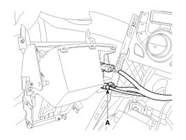
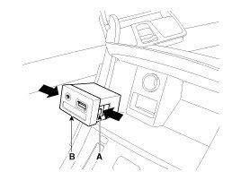

AVN System
Removal
1. Remove the shift lever knob.
2. Remove the console upper cover.
3. Disconnect the connector (A) from the console upper cover.

4. Remove the multimedia jack (B) from the console under cover after releasing the fixed hooks (A).

Installation
1. Install the multimedia jack.
2. Connect the multimedia jack connector.
3. Install the console upper cover.
4. Install the shift lever knob.
NOTE:
Make sure the multimedia connector and the console upper cover connectors are plugged in properly.